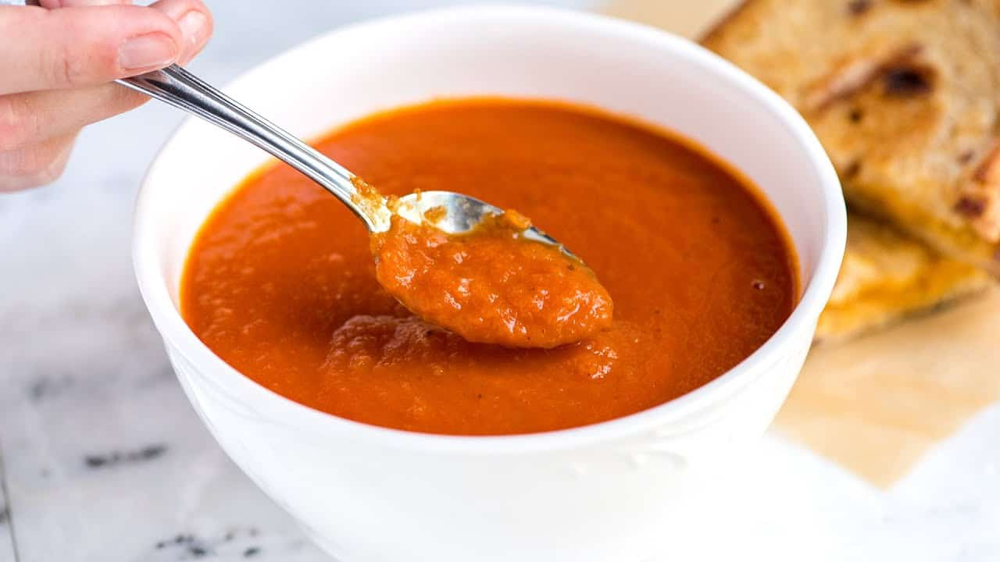

Tomato Soup

Odin's Tomato Soup
Homemade tomato soup is like a hug in a bowl, which, when the weather is as gray as it has been here lately, is exactly what I need.
Ingredients
- Butter
- Onion and Garlic
- Crushed Tomatoes
- Chicken Stock
- Basil
- Sugar
- Black Pepper
- Whipping Cream
- Parmesan Cheese
Steps
- Saute Aromatics
- Make the tomato soup base
- Blend if desired
- Add cream and parmesan
- Serve